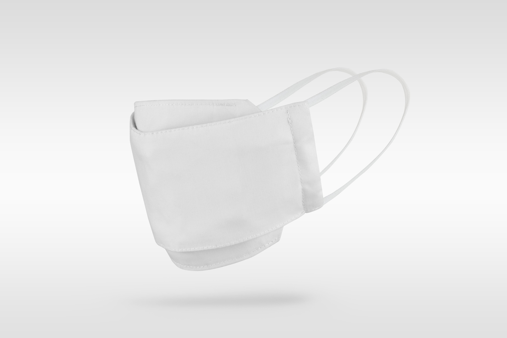
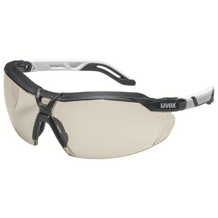

K-SAFE (Krakatau Command Center & Emergency Assistant) adalah sistem informasi mitigasi bencana gunung berapi berbasis Progressive Web App (PWA) yang dapat diakses secara offline maupun online.
Aplikasi ini dirancang untuk membantu masyarakat pesisir Selat Sunda dalam memantau zona Kawasan Rawan Bencana (KRB) melalui peta WebGIS interaktif, menyiapkan logistik darurat (Tas Siaga), mengirim koordinat GPS via WhatsApp, serta berkonsultasi dengan Asisten Darurat AI.
🗺️ Peta Pemantauan (WebGIS)
Dipetakan menggunakan SIG Leaflet.js dan citra dasar OpenStreetMap pada koordinat kawah -6.1021° LS, 105.4230° BT.
📈 Grafik Tingkat Kerawanan (KRB)
Perbandingan indeks risiko berdasarkan jarak dari pusat erupsi Gunung Anak Krakatau.
🎒 Panduan & Checklist Tas Siaga
-

Masker Respirator N95 / KN95 Wajib standar N95 (seperti gambar) untuk menyaring partikel halus abu vulkanik silika. Hindari masker kain biasa. -

Kacamata Pelindung (Safety Goggles) Kacamata tertutup rapat (seperti kacamata lab/renang) untuk mencegah iritasi kornea akibat debu vulkanik. -
 Makanan Kaleng Siap Saji & Air Makanan tahan lama (sarden/kornet), biskuit berkalori tinggi, kurma, dan air mineral min. 3 liter/orang.
Makanan Kaleng Siap Saji & Air Makanan tahan lama (sarden/kornet), biskuit berkalori tinggi, kurma, dan air mineral min. 3 liter/orang. -
 Kotak P3K & Obat Pribadi Obat tetes mata steril, perban, antiseptik, obat asma/pernapasan, dan obat rutin pribadi.
Kotak P3K & Obat Pribadi Obat tetes mata steril, perban, antiseptik, obat asma/pernapasan, dan obat rutin pribadi. -
 Dokumen Penting & Senter LED KTP, KK, dan Ijazah disimpan dalam map plastik kedap air (ziplock), disertai senter dan powerbank penuh.
Dokumen Penting & Senter LED KTP, KK, dan Ijazah disimpan dalam map plastik kedap air (ziplock), disertai senter dan powerbank penuh.
🚨 SOS & Kontak Darurat Zona Aman
Kirim koordinat darurat atau buka rute evakuasi tercepat menuju dataran tinggi.
🗺️ Cari Rute Evakuasi TercepatGagal melacak titik GPS otomatis. Pastikan izin lokasi menyala atau gunakan rute evakuasi manual di atas.
Ketuk tombol di bawah untuk langsung menelepon layanan darurat terdekat di wilayah Selat Sunda (Banten & Lampung):